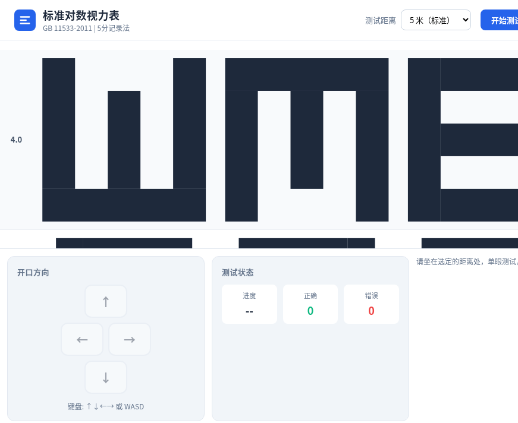
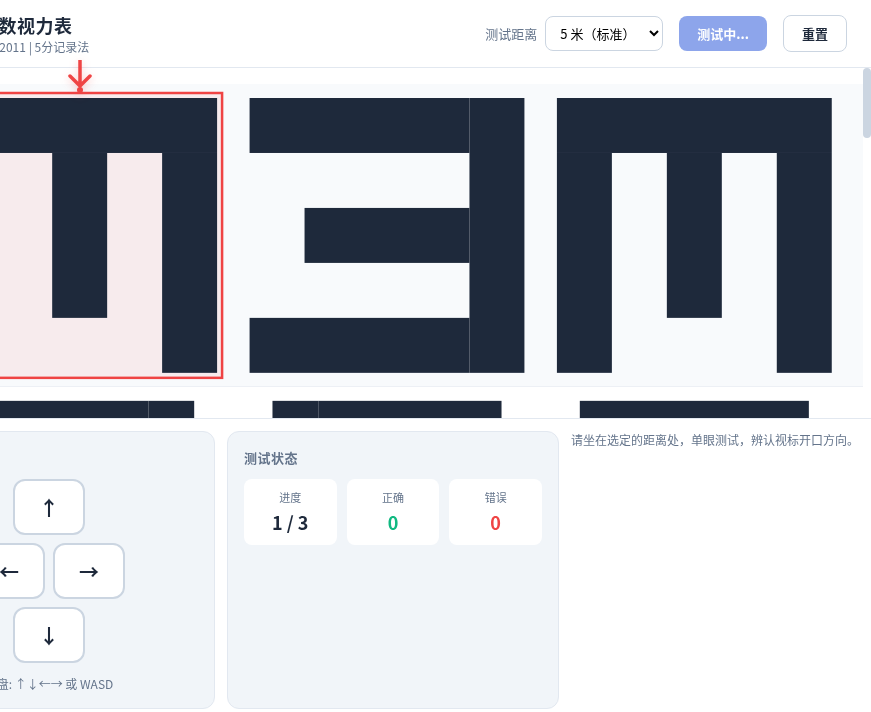
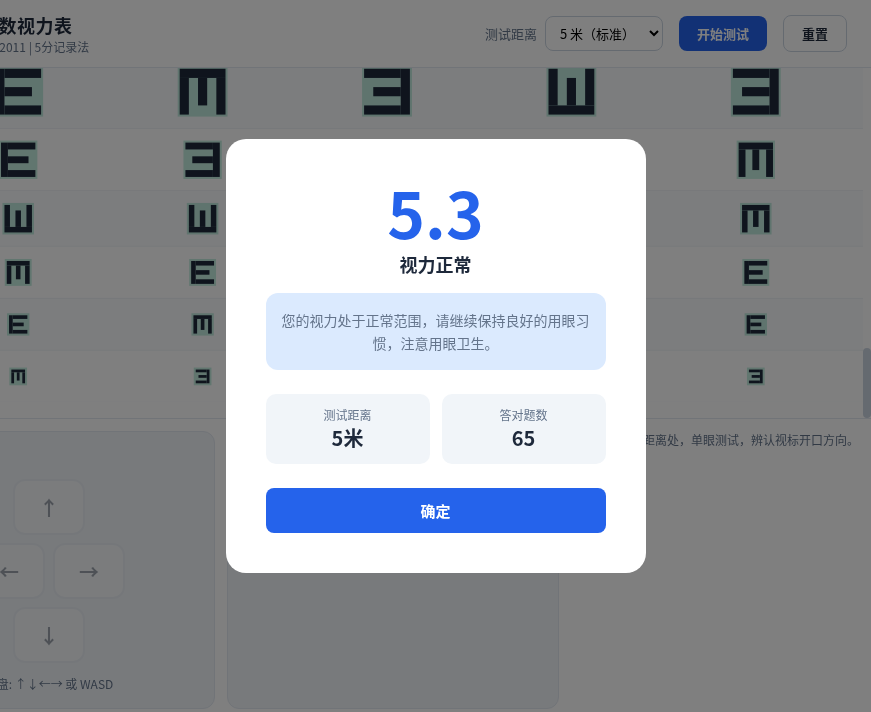

基于 GB 11533-2011《标准对数视力表》国家标准开发的在线视力自测工具。纯前端实现，浏览器直接打开即可使用，无需安装任何依赖。将标准 E 字视力表数字化，用户只需一台电脑显示器，选择合适的测试距离，即可在家中完成一次符合国家标准的视力自测。

将国家标准视力表搬到浏览器里，让每个人都能随时随地进行一次有据可依的视力自测。
从完整视力表概览，到测试中的红色箭头指引，再到结果弹窗 — 三个关键场景呈现工具的完整体验。


依据 GB 11533-2011 标准，5.0 级（小数视力 1.0）在 5 米标准距离下的 E 字边长为 7.272mm。各级别视标尺寸严格按以下公式计算。
| 5分记录 | 小数视力 | 5米标准边长(mm) |
|---|---|---|
| 4.0 | 0.1 | 72.72 |
| 4.1 | 0.12 | 60.60 |
| 4.2 | 0.15 | 48.48 |
| 4.3 | 0.2 | 36.36 |
| 4.4 | 0.25 | 29.09 |
| 4.5 | 0.3 | 24.24 |
| 4.6 | 0.4 | 18.18 |
| 4.7 | 0.5 | 14.54 |
| 4.8 | 0.6 | 12.12 |
| 4.9 | 0.8 | 9.09 |
| 5.0 | 1.0 | 7.27 |
| 5.1 | 1.2 | 6.06 |
| 5.2 | 1.5 | 4.85 |
| 5.3 | 2.0 | 3.64 |
E 字笔划宽度与缺口均为边长的 1/5，确保 1 分视角标准 · 完整视力表共 14 个级别（4.0 ~ 5.3）
E 字视标的 Canvas 矢量绘制 — 3 条横杠 + 1 条竖杠，笔划宽度为边长的 1/5，通过旋转实现四个朝向。这是整个项目最核心的绘制函数。
function drawE(ctx, cx, cy, size, direction) { const bar = size * 0.2; // 笔划宽度 = 边长 × 1/5 const gap = size * 0.2; // 缺口宽度 = 边长 × 1/5 ctx.save(); ctx.translate(cx, cy); let rotation = 0; switch (direction) { case 'up': rotation = -Math.PI / 2; break; case 'down': rotation = Math.PI / 2; break; case 'left': rotation = Math.PI; break; case 'right': rotation = 0; break; } ctx.rotate(rotation); ctx.fillStyle = '#1e293b'; // 竖杠（左侧） ctx.fillRect(-size / 2, -size / 2, bar, size); // 上横杠 ctx.fillRect(-size / 2 + bar, -size / 2, size - bar, bar); // 中横杠（右侧有缺口） ctx.fillRect(-size / 2 + bar, -bar / 2, size - bar - gap, bar); // 下横杠 ctx.fillRect(-size / 2 + bar, size / 2 - bar, size - bar, bar); ctx.restore(); }